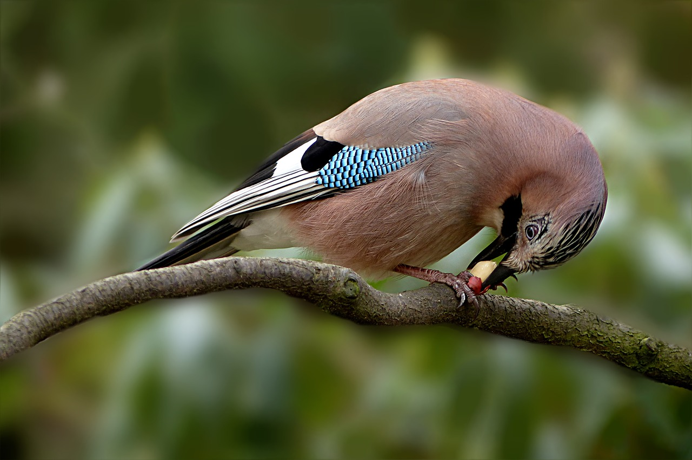
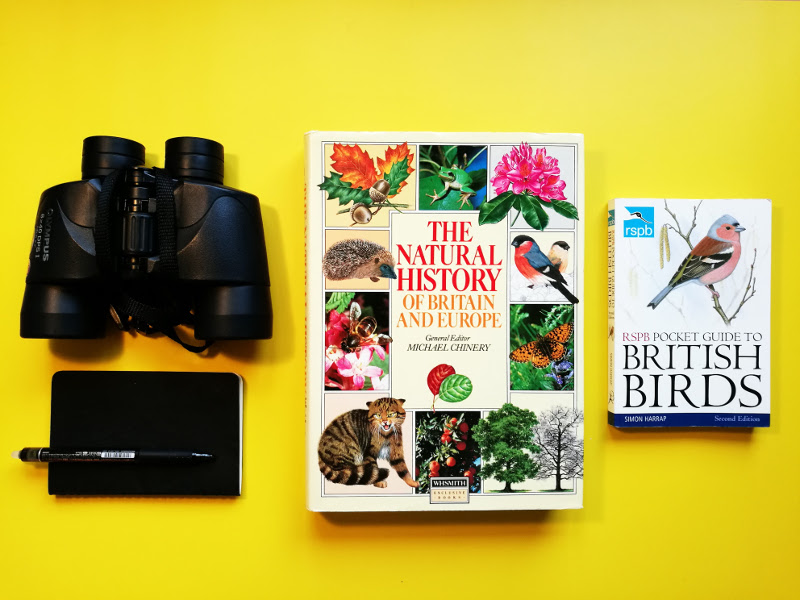
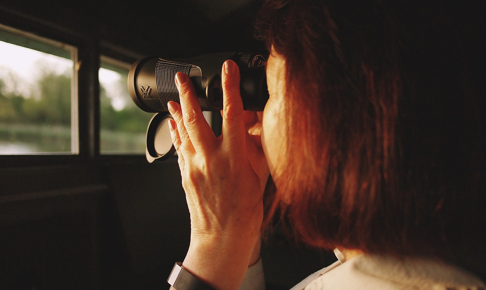
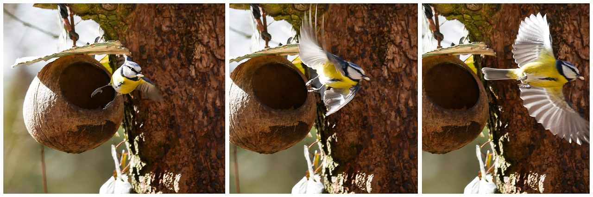
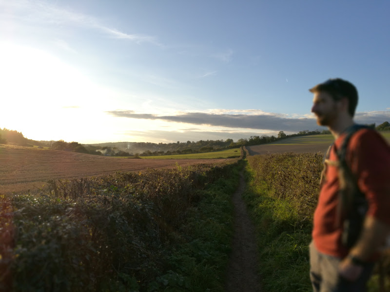

There’s so many different animals, plants and stuff out there that it can seem overwhelming. Many of us wish we could recognise and put a name to the trees and birds we see, but only experts are any good at that. We don’t have the time, the luxury to learn that kind of thing. Or so we think.
You don’t have to be an expert or a full time naturalist to be able to recognise the plants and animals around us. After all, you don’t need to learn the entire natural history of the world to be able to name the twenty most common birds and ten most common trees in your area. Birds and trees are easier to learn about than e.g. wildflowers or mammals because they are both pretty easy to spot once you start looking for them.

Can you name this bird (if you're from Europe)?
I don’t claim to be any kind of nature expert, but that’s kind of my point; nature appreciation is open to anyone at any level. So here’s my take on how to get you started on your path to becoming the next David Attenborough:
We all love kit. It’s in human nature to use tools to solve problems. So it’s natural to think you must need a lot of expensive equipment and shelves full of books to start learning about nature. But all this equipment is often just a safety net to stop us feeling helpless before a seemingly insurmountable task. As I point out below the most important things we need come free! But if you insist, let’s get it out the way:

The guidebooks can be got second hand in a local charity shop. Low-end (but not budget binoculars) sell on Amazon for £60. More high-end, used binoculars can also be found on eBay.
For learning about birds, a pocket guide book like the one provided by RSPB is perfect (if you’re from outside the UK then hopefully something similar is available for your area). Whilst there is a wealth of online information about birds, you’ll probably need something in paper-form so that you can read it in the field.
I find that paper books are best for flicking between pages, both in the field to identify what you’re looking at before it flies off and when browsing at leisure at home. Paper guide books also group birds (often in colour-coded families) that help you to pick up common traits within a family.
Buying this book from the RSPB will ensure your money goes to helping their causes. Likewise, you’ll find it and others available in charity shops for a couple of pounds.
Similar pocket books are available for trees, fungi, wildflowers and so on. You might add these to your collection bit by bit as your interest grows.
Whilst pocket books are great for out in the field, it’s great to have something more substantial for back in the home. I found this natural history book in a charity shop for a few pounds. The great thing about this book is that it covers all the most common birds, mammals, insects, amphibians, plants and fungi in Britain and Europe – quite a lot to take in at first but can be used more like a reference encyclopaedia than something you will read cover to cover. There are many other similar books available. Go for one that has been lovingly-illustrated – you’ll find yourself flicking through it for pleasure!
When choosing binoculars, exercise caution. Those fit-in-your-pocket binoculars look great, don’t they? And they’re cheap too. As for the quality, well, who can complain for that price?
The problem is that most cheap, pocket binoculars are absolute junk. There are two main reasons for this: a) the cheap binoculars have cheap lenses that effectively reduce the quality of the light that passes through them due to defects in the glass, and b) being small, pocket binoculars don’t “gather” much light from the object you’re looking at, which makes everything look dark and monochrome. Good pocket binoculars are available, but they tend to be expensive for the beginner. Many people have cheap, pocket binoculars they keep in their bag or car, and a larger, more expensive pair for binocularing with intent.

Using binoculars opens up a whole new world to your senses.
Explainthatstuff.com gives a much better explanation than I could of how binoculars work and how to choose the right type, as do the RSPB. For most nature-watching (or star-gazing) you’ll be looking for 8x or 10x magnification; anything more and you won’t be able to keep the binoculars stable enough to see anything (you’d need a tripod).
If you keep an eye on online retailers, you’re likely to find quality binoculars from well-known brands for around £50.
Keep a pen and notebook with you. Always. This will help you in your nature education, but also allow you to write down any other ideas that come to you whilst you’re out and about. A notebook can be replaced by smartphone apps if you prefer, but this usually restricts what kind of information you can record.
When you’re out walking and see something new or interesting, making a little note to remind yourself to look it up later. Include physical characteristics as well as where and when you saw it. Such records help you to remember what you’ve seen and to build up an understanding of what animals and plants can be found where.
Cornell Lab of Ornithology provides some great tips on how to keep a birding field notebook, but I think this can be applied to any kind of plant or animal.
As a beginner it can feel like every tree or bird looks the same. How could anyone ever tell the difference? But fear not! Learning about plants and animals is more than about how things look at first glance.
When we recognise a plant, we aren’t relying on a single visual clue such as the shape or a flower or leaf. There is also the colour of the plant, whether this is the same on the top and bottom of the leaf, whether there are one, two or more leaves clustered together, and so on. You should also look around you: what kind of soil is the plant in and what other plants are nearby? What about the smell? A safe assumption is that the animal or plant you’re looking as is something very common, only considering rarer species when you’ve exhausted all other possibilities.

Some birds like bluetits have diagnostics colours and markings that allow identification at a glance.
When identifying animals there are additional visual hints over their sedentary, chlorophyll-based cousins: How does the animal move? Is it fast or slow? Is it timid or confident? If it’s a bird, pay particular attention to how it flaps its wings. Is it a flap and glide in quick succession? A flurry of wingbeats and a long swoop? A constant flap-flap-flap? Is the flying style neat and direct or messy and wavering?
Sound is very important for identifying most types of animals. Often you will know an animal is there without ever seeing them! Even more so than for identification by sight, when starting out it can seem impossible to distinguish one bird call or frog croak from the next. Surely the ear cannot make such distinctions? Luckily, the human brain is a clever thing.
Unknown to you, your eyes, ears, and nose are constantly picking up detailed information about your environment and sending messages to your brain. In the name of efficiency, your brain discards the vast majority of this sensory data, focussing in on what it thinks is useful to you. But you can override this process by starting to actively look, listen and smell.
Through practice, you reinforce certain neural pathways and your brain gets better at, for instance, distinguishing the tones, timbres and melodies of bird calls. For sound, I imagine this process is easier if you’re a musician or keen music-listener.

Getting up, close and personal with nature.
Before long you’ll notice you can pick out species better than before. Yes, the bird might have been too far away to pick out detailed markings and colours, but you could tell its approximate size, you heard its call, you saw how it flew, what it ate, if it perched on a high tree branch or flicked at the forest floor, if it was day or night, whether it was spring, summer, winter or autumn.
Think of identification as a jigsaw to which you never have all the pieces – you can still make an educated guess as to what it is. And the more experience you have, the less pieces you need before you can make that guess.
With your basic kit and the above tips in mind, get out there and get looking (and hearing and smelling and touching)! It will be tough at first, but you’ll likely notice your learning quickens after a few weeks as you start to recognise the most common birds and trees in your area. Mammals, insects, wildflowers and others can be harder to identify, but the rewards are consequently greater when you manage to do so!
Nothing in this world is worth having or worth doing unless it means effort, pain, difficulty.